Home / Past papers / MLT Quiz 1 / this paper
Machine Learning Techniques 16 Jul 26 - 19 Jul 2026
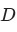
consisting of 5000 points in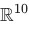
with features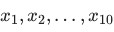
.Every data point satisfies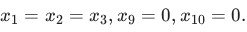
The independent base feature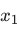
has variance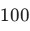
. The remaining features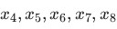
are mutually uncorrelated, uncorrelated with , and each has variance .Standard PCA is performed on this dataset. Let
.Standard PCA is performed on this dataset. Let 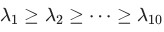
denote the eigenvalues of the covariance matrix in descending order. Which of the following statements is strictly true?- Exactly 3 eigenvalues are zero:
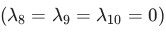
, and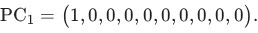
- Exactly 4 eigenvalues are zero(
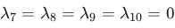
), and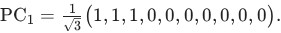
- Exactly 4 eigenvalues are zero( ), and
- Exactly 2 eigenvalues are zero(
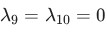
), and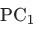
lies somewhere in the -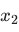
-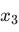
subspace.
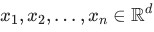
.Define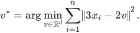
Which of the following is the correct expression for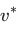
?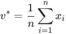
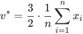
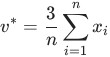
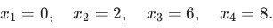
Suppose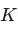
-means is run with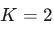
clusters. At iteration , the centroids are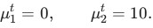
The assignment step is performed using these centroids to produce new assignments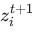
for each point. Compute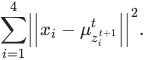
- 4
- 8
- 24
- 44
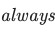
true for the -means algorithm with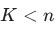
cluster centres, between consecutive iterations and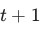
?- If ,then at least one data point will change its cluster assignment from iteration to .
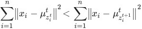
- If , then no data point will change its cluster assignment from iteration to .
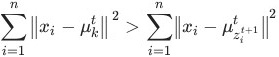
- If a data point changes its cluster assignment from cluster to cluster
 , it is guaranteed that the centroid of cluster strictly changes, i.e.,
, it is guaranteed that the centroid of cluster strictly changes, i.e., 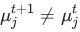
. - It is not possible for the -means algorithm to revisit a configuration, where a configuration corresponds to the -way partition generated by clustering at the end of each iteration.
-means algorithm. Which of the following values of is most likely to yield the 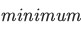
value of objective function of -means?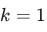
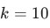
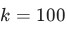
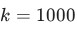
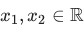
: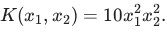
Which of the following feature maps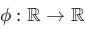
satisfies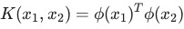
for all ?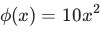
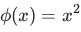
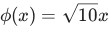
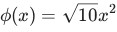
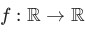
be a convex function.Which of the following choices of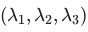
that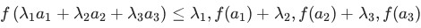
holds for convex function and ? , you are given only the following two quantities for the first component: where is the prior mixing weight and is the posterior responsibility. All other component parameters and densities are unknown. Based strictly on these two values and the mathematical definition of the E-step responsibility,
which of the following quantities can be uniquely determined as exact numerical values?
, you are given only the following two quantities for the first component: where is the prior mixing weight and is the posterior responsibility. All other component parameters and densities are unknown. Based strictly on these two values and the mathematical definition of the E-step responsibility,
which of the following quantities can be uniquely determined as exact numerical values?- The marginal probability density of the data point, .
- The ratio of the conditional density to the marginal density for component
 : .
: . - The ratio of the joint probability of component to the sum of joint probabilities of all other components: .
- The sum of posterior responsibilities for all components other than component :
is computed as .Determine the value of , correct to two decimal places. observations where each .It is given that
The covariance matrix computed from has eigenvalues Let be the direction of maximum variance with . Find the value of
.
observations where each .It is given that
The covariance matrix computed from has eigenvalues Let be the direction of maximum variance with . Find the value of
.Concepts this paper tests
Auto-generated summary from the source site. Handy as a checklist; the lessons above explain each idea from scratch.
Here's a summary of the core topics, concepts, principles, and equations essential for the exam, based on the provided questions.
Summary of Core Topics and Concepts
The questions cover fundamental aspects of Data Science, Machine Learning, Linear Algebra, and Optimization, crucial for understanding and implementing various algorithms.
1. Linear Algebra for Data Science
- Covariance Matrix: A square matrix giving the variance between each pair of random variables. It is symmetric and positive semi-definite.
- Eigenvalue Decomposition: Decomposing a matrix into a set of eigenvalues and eigenvectors. Eigenvalues represent magnitudes (e.g., variance in PCA), and eigenvectors represent directions.
- Matrix Rank: The number of linearly independent rows or columns in a matrix. For a covariance matrix, its rank indicates the effective dimensionality of the data.
- Vector Norms: Measures the "length" or "magnitude" of a vector. The Euclidean (L2) norm, denoted as , is commonly used for distance calculations.
2. Principal Component Analysis (PCA)
- Dimensionality Reduction: A technique to reduce the number of features (dimensions) in a dataset while retaining most of the variance.
- Variance Maximization: PCA finds orthogonal directions (principal components) along which the data varies most.
- Eigenvalues in PCA: The eigenvalues of the covariance matrix represent the amount of variance captured by their corresponding principal components. Larger eigenvalues correspond to more important components.
- Eigenvectors in PCA: The eigenvectors of the covariance matrix are the principal components, representing the new orthogonal axes.
- Mean-centered Data: For PCA, it's common practice to center the data by subtracting the mean of each feature, making the mean of the dataset zero.
3. Optimization
- Minimizing Sum of Squared Errors: A common objective in many machine learning algorithms (e.g., linear regression, K-Means). Finding the minimum involves calculus.
- Gradient Descent (Concept): An iterative optimization algorithm for finding the local minimum of a function by moving in the direction of the steepest descent (negative of the gradient).
- Vector Calculus for Optimization: Using derivatives (gradients) with respect to vector variables to find critical points of multivariate functions.
4. K-Means Clustering
- Iterative Algorithm: An unsupervised learning algorithm that partitions data points into clusters.
- Objective Function (WCSS - Within-Cluster Sum of Squares): The sum of squared distances between each data point and its assigned cluster centroid. The goal of K-Means is to minimize this function.
- E-Step (Assignment): Each data point is assigned to the cluster whose centroid is closest (based on Euclidean distance).
- M-Step (Centroid Update): Each cluster's centroid is updated to be the mean of all data points currently assigned to that cluster.
- Convergence Properties: K-Means is guaranteed to converge to a local optimum of its objective function. The WCSS will never increase in an iteration.
- Revisiting Configurations: Due to the descent property (WCSS never increasing), K-Means cannot revisit a previous configuration (cluster assignments and centroids) once it has moved to a new one, as that would imply a non-decreasing WCSS after a change.
- Sensitivity to Initialization: The final clustering result can vary significantly depending on the initial choice of centroids.
- Choice of K: The number of clusters is a hyperparameter. A smaller generally leads to a higher WCSS.
5. Kernel Methods
- Kernel Functions: Functions that compute the inner product of data points in a high-dimensional feature space without explicitly transforming the data (kernel trick).
- Positive Semi-Definite (PSD) Kernels: A function is a valid kernel if and only if its Gram matrix (a matrix of pairwise kernel evaluations) is positive semi-definite for any set of data points.
- Properties of Kernels (Closure Properties): Valid kernels retain their validity under certain operations (e.g., addition, multiplication, scaling by non-negative constants, normalization).
Common Valid Kernels:
- Linear Kernel: Measures linear similarity between data points.
- Gaussian (RBF - Radial Basis Function) Kernel: Measures non-linear similarity, often used for its ability to map data to infinite-dimensional spaces.
6. Gaussian Mixture Models (GMM)
- Expectation-Maximization (EM) Algorithm: An iterative algorithm for finding maximum likelihood or maximum a posteriori estimates of parameters in statistical models, where the model depends on unobserved latent variables (like cluster assignments in GMM).
- GMM Components: A GMM represents the probability distribution of observations as a mixture of several Gaussian distributions.
- E-Step (Expectation Step): Computes the posterior probability (responsibility) that each data point belongs to each component, given the current parameter estimates.
- M-Step (Maximization Step): Updates the parameters (mixing weights, means, covariances) of each Gaussian component to maximize the likelihood, given the responsibilities computed in the E-step.
- Mixing Weights (): The prior probability of a data point belonging to component .
- Conditional Probability Density (): The probability density of observing data point given that it came from component .
- Marginal Probability Density (): The overall probability density of observing data point , marginalized over all components.
- Posterior Responsibility (): The posterior probability that data point belongs to component , given and the current model parameters. This is the output of the E-step.
Essential Equations and Principles (in LaTeX)
Covariance Matrix (for mean-centered data ):
Eigenvalue Decomposition: For a square matrix , an eigenvector and eigenvalue satisfy:
Variance Explained by a Principal Component: For a mean-centered dataset and a unit eigenvector (principal component), the variance of the projections of data points onto is its corresponding eigenvalue :
The sum of all eigenvalues equals the total variance (trace of the covariance matrix):
The number of non-zero eigenvalues equals the rank of the covariance matrix.
Minimization of Sum of Squared Errors: To minimize with respect to , set the gradient to zero:
For the specific problem :
K-Means Algorithm:
Objective Function (WCSS):
Assignment Step (E-step):
Update Step (M-step):
Kernel Functions:
- Linear Kernel:
- Gaussian (RBF) Kernel:
Properties of Valid Kernels ():
- Sum: is a valid kernel.
- Product: is a valid kernel.
- Scaling (): is a valid kernel.
- Normalization (if ): is a valid kernel.
Gaussian Mixture Models (GMM) - E-Step:
Posterior Responsibility ():
Marginal Probability Density ():
Properties of Responsibilities: